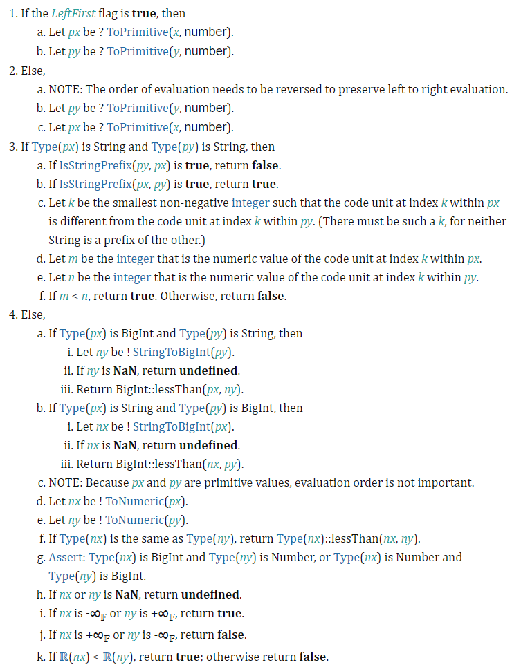
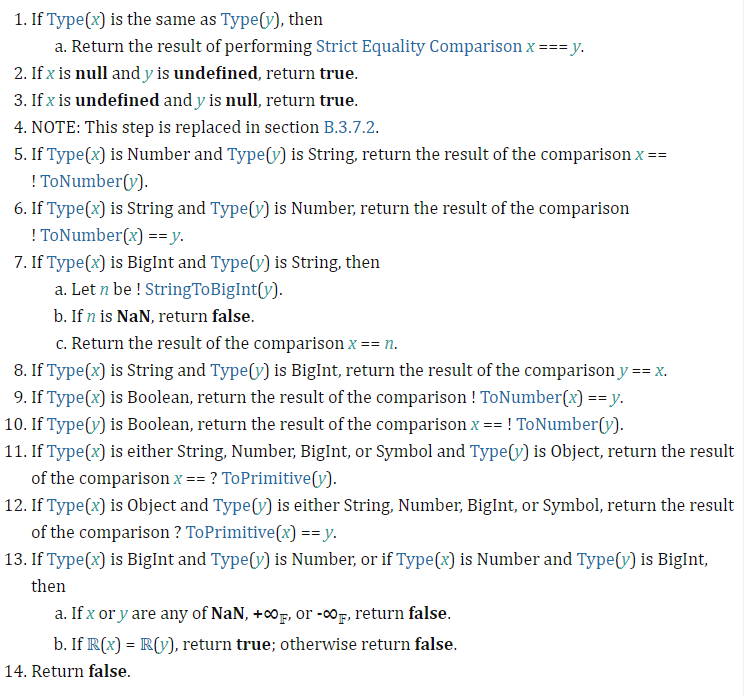

Базовый курс JavaScript
Урок 2. Основные операторы JavaScript
Практическое задание
1. Почему код дает именно такие результаты?
var a = 1, b = 1, c, d;
c = ++a; alert(c); // 2
d = b++; alert(d); // 1
c = (2 + ++a); alert(c); // 5
d = (2 + b++); alert(d); // 4
alert(a); // 3
alert(b); // 3
Решение:
c = ++a; alert(c);
// 2
Так как в данном случае префиксная форма инкремента (преинкремент / pre increment), которая работает по аналогии с кодом:
a = a + 1; // 2
c = a; // 2
d = b++; alert(d);
// 1
Так как в данном случае постфиксная форма инкремента (постинкремент / post increment), которая работает по аналогии с кодом:
d = a; // 1
b = b + 1; // 2
так как a = 2 (после операции c = ++a; ), то 2 + ++a равнозначно: 2 + (a + 1) , поэтому результат (2 + 2 +1) = 5
c = (2 + ++a); alert(c); // 5
так как b = 2 (после операции d = b++; ), то 2 + b++ равнозначно: 2 + 2 , поэтому результат d = (2 + b++) = (2 + 2) = 4 , а потом b увеличивается на 1.
// код решения
– так как в процессе выполнения предыдущих операций переменная a два раза увеличивается на 1 с помощью преинкремента, а переменная b два раза увеличивается на 1 с помощью постинкремента.
2. Чему будет равен x?
var a = 2;
var x = 1 + (a *= 2);
Решение:
a = a * 2; // 2 * 2 = 4
x = 1 + a; // 1 + 4 = 5
3. Объявить две целочисленные переменные — a и b и задать им произвольные начальные значения. Затем написать скрипт, который работает по следующему принципу:
- если a и b положительные, вывести их разность;
- если a и b отрицательные, вывести их произведение;
- если a и b разных знаков, вывести их сумму;
Решение:
let a;
let b;
function calculation( a, b ){
if ( a >=0 && b >=0 ) {
return a - b;
} else if (a <0 && b <0) {
return a * b;
} else if (a <0 || b >=0 ) {
return a + b;
}
}
a = 5;
b = 7;
console.log(`Входные данные: a = ${a}, b = ${b}`);
alert(`Входные данные: a = ${a}, b = ${b}`);
console.log(`Результат: ${calculation(a, b)}`);
alert(`Результат: ${calculation(a, b)}`);
a = -3;
b = -6;
console.log(`Входные данные: a = ${a}, b = ${b}`);
alert(`Входные данные: a = ${a}, b = ${b}`);
console.log(`Результат: ${calculation(a, b)}`);
alert(`Результат: ${calculation(a, b)}`);
a = -3;
b = 4;
console.log(`Входные данные: a = ${a}, b = ${b}`);
alert(`Входные данные: a = ${a}, b = ${b}`);
console.log(`Результат: ${calculation(a, b)}`);
alert(`Результат: ${calculation(a, b)}`);
4. Присвоить переменной a значение в промежутке [0..15]. С помощью оператора switch организовать вывод чисел от a до 15.
Решение:
function printList() {
let a = Math.floor(Math.random() * 15);
console.log(`a = ${a}`);
switch (a){
case (0):
console.log(0)
++a
case (1):
console.log(1)
++a
case (2):
console.log(2)
++a
case (3):
console.log(3)
++a
case (4):
console.log(4)
++a
case (5):
console.log(5)
++a
case (6):
console.log(6)
++a
case (7):
console.log(7)
++a
case (8):
console.log(8)
++a
case (9):
console.log(9)
++a
case (10):
console.log(10)
++a
case (11):
console.log(11)
++a
case (12):
console.log(12)
++a
case (13):
console.log(13)
++a
case (14):
console.log(14)
++a
case (15):
console.log(15)
++a
}
}
printList();
5. Реализовать четыре основные арифметические операции в виде функций с двумя параметрами. Обязательно использовать оператор return.
Решение:
function mySum(x, y) {
return x + y;
}
function myDiff(x, y) {
return x - y;
}
function myMult(x, y) {
return x * y;
}
function myDiv(x, y) {
if ( y == 0 ) {
return 'error: на ноль делить нельзя';
}else {
return x / y;
}
}
let a = 5;
let b = 7;
console.log(`a = ${a}, b = ${b}`);
console.log(`a + b = ${mySum(a, b)}`);
console.log(`a - b = ${myDiff(a, b)}`);
console.log(`a * b = ${myMult(a, b)}`);
console.log(`a / b = ${myDiv(a, b)}`);
console.log(`a / 0 = ${myDiv(a, 0)}`);
6. Реализовать функцию с тремя параметрами: function mathOperation(arg1, arg2, operation), где arg1, arg2 – значения аргументов, operation – строка с названием операции. В зависимости от переданного значения выполнить одну из арифметических операций (использовать функции из пункта 5) и вернуть полученное значение (применить switch).
Решение:
function mathOperation(arg1, arg2, operation) {
switch (operation) {
case '+':
return mySum(arg1, arg2);
case '-':
return myDiff(arg1, arg2);
case '*':
return myMult(arg1, arg2);
case '/':
return myDiv(arg1, arg2);
default:
return 'error: неизвестное действие'
}
}
console.log(`a + b = ${mathOperation(a, b, '+')}`);
console.log(`a - b = ${mathOperation(a, b, '-')}`);
console.log(`a * b = ${mathOperation(a, b, '*')}`);
console.log(`a / b = ${mathOperation(a, b, '/')}`);
console.log(`a / 0 = ${mathOperation(a, 0, '/')}`);
console.log(`a r b = ${mathOperation(a, b, 'r')}`);
7. * Сравнить null и 0. Объяснить результат
Решение:
console.log(`0 > null: ${0 > null}`); // false
console.log(`0 < null: ${0 < null}`); // false
сранение 0 > nul (0 < null, null > 0, null < 0) в JS происходит по Алгоритму сравнения абстрактного отношения
(7.2.13 Abstract Relational Comparison)7.2.13 Abstract Relational Comparison

x > y
x = 0, y = null
В пунктах 1 и 2 алгоритм преобразует левую (0) и правую (null) в примитивы,
но при этом 0 и null остаются 0 и null:
px = ToPimitive(x) = 0
py = ToPimitive(x) = null
в п.3 не заходим - так как тип px и тип py не являются строками (String)
в п.4 попадаем в подпункты d. и e., где px и py преобразовываются:
nx = ToNumber(px) = 0
ny = ToNumber(px) = +0 // (positive zero)
в итоге заходим в подпункт k. и сравниваем nx и ny:
если nx < ny - true , иначе false
0 < +0 - false
Следовательно:
0 > nul - false
Попробуем равенство:
console.log(`0 == null: ${0 == null}`); // false
сранение 0 == nul (null == 0) в JS происходит по Алгоритму сравнения абстрактного равенства
(7.2.14 Abstract Equality Comparison)7.2.14 Abstract Equality Comparison

в п.1 не попадаем, т.к. Type(x) и Type(y) разные
п.2-п.10 не заходим
попадаем в п.11, так как наш Type(x) - Number, а Type(y) - Object,
следовательно надо вернуть результат сравнения x == ToPrimitive(y) , в нашем случае:
y = null
py = ToPimitive(y) = null
при сравнении x == py (0 и null) получаем false
Следовательно:
0 == nul - false
Больше/меньше или равно:
console.log(`0 >= null: ${0 >= null}`); // true
console.log(`0 <= null: ${0 <= null}`); // true
В случае с 0 >= null
JS производит проверку 0 < null - если false, то true
то есть если 0 не меньше null - значит 0 >= null верно!
0 >= null // true
8. * С помощью рекурсии организовать функцию возведения числа в степень.
Формат: function power(val, pow) , где val – заданное число, pow – степень.
Решение:
function power(val, pow) {
if (pow === 0) {
return 1
}
if (pow === 1) {
return val
}
if (pow > 0) {
return val * power(val, pow - 1)
}
else {
return 1 / val * power(val, pow + 1)
}
}
console.log(power(2, 3));
console.log(power(2, -3));